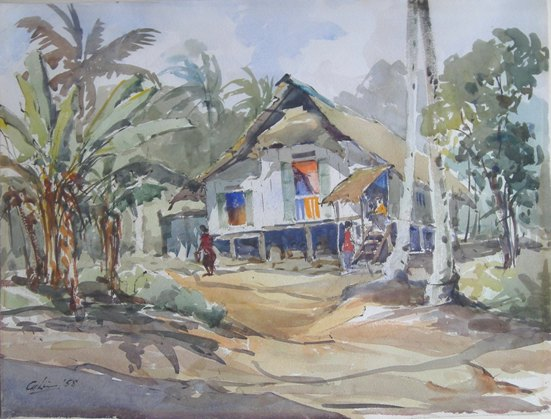

Lim Cheng Hoe
1912 – 1979
Artist Biography
Lim Cheng Hoe was a watercolourist who is recognised as a key pioneer in Singaporean art and who helped found the Singaporean Watercolour Society. Lim studied at the Raffles Institute and attended classes by Richard Walker, the first Art Inspector of Schools in Singapore, but was essentially self-taught. He earned a living in various government jobs and painted on Sundays and other periods of spare time, taking trips to some of the more remote rural and coastal locations which he sought to capture in watercolour with both accuracy and vigour. Lim and a group of like-minded artist friends became known as the Singapore River artists, though in later years he painted more widely in the Singaporean and Malaysian countryside. He had posthumous solo shows at the Singapore Watercolour Society and the Singapore Ministry of Culture.

Untitled, 1958